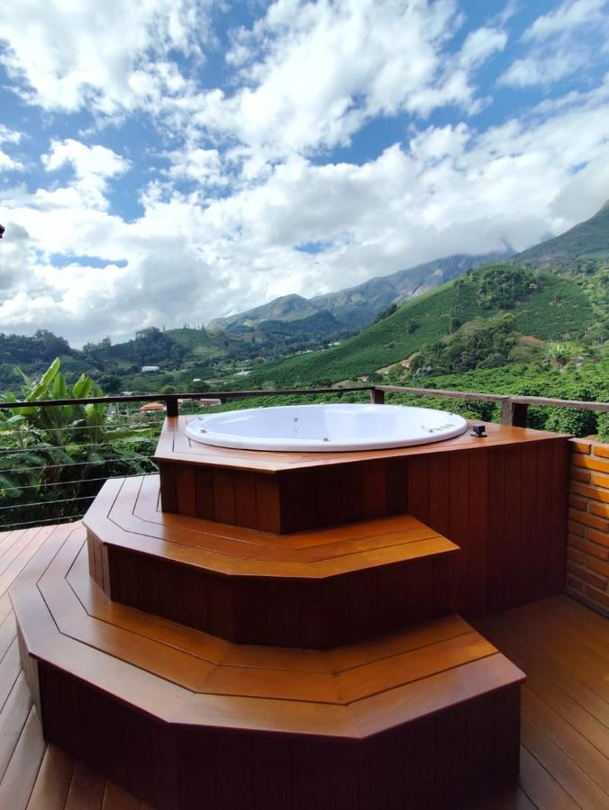
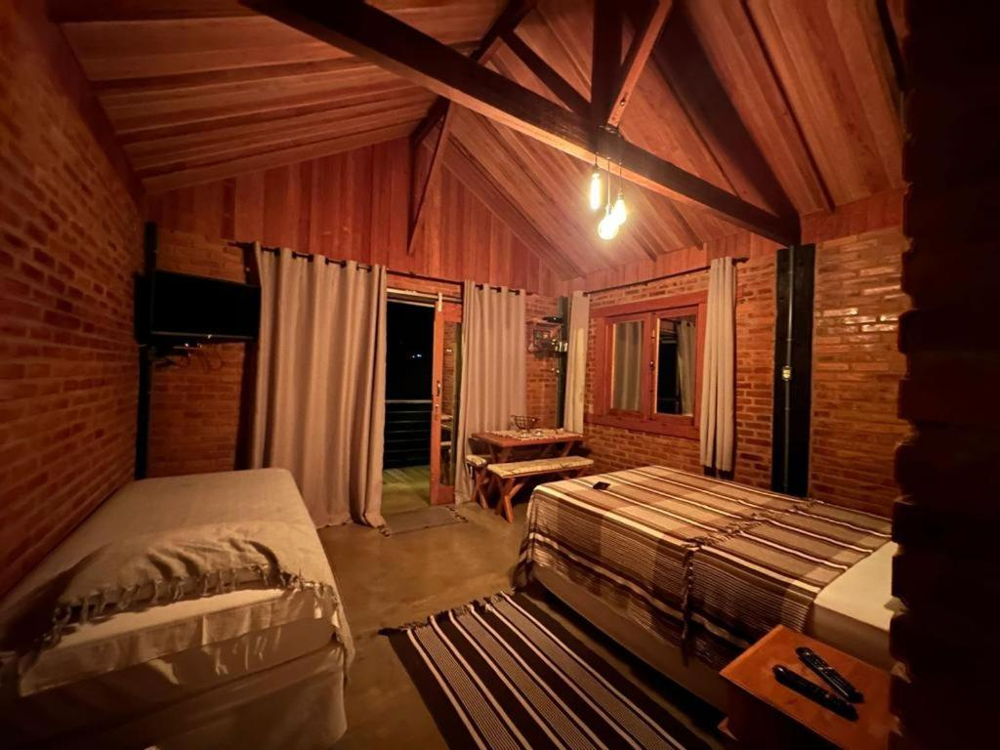
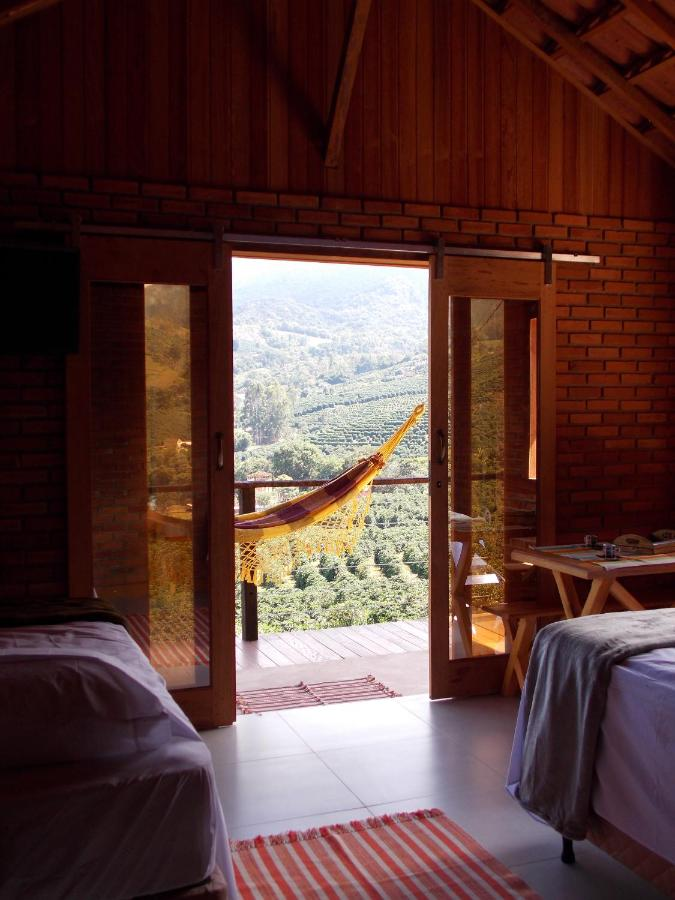
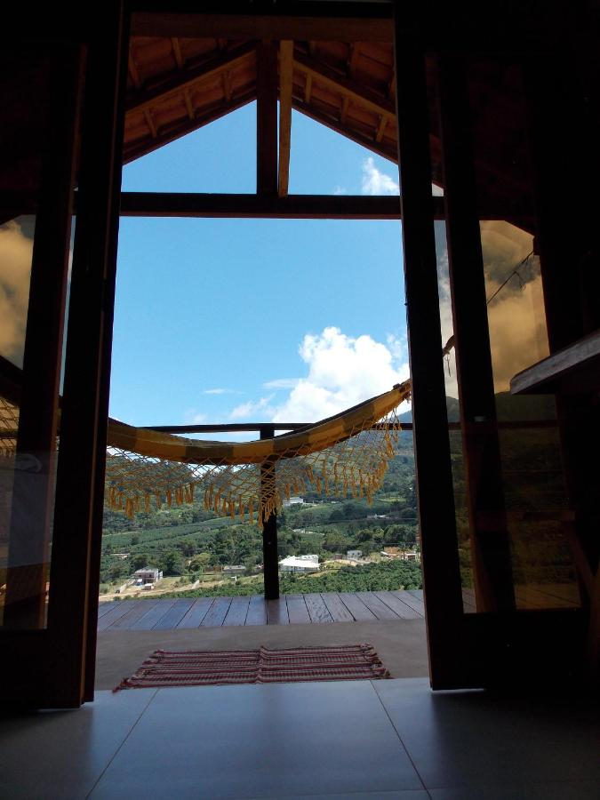
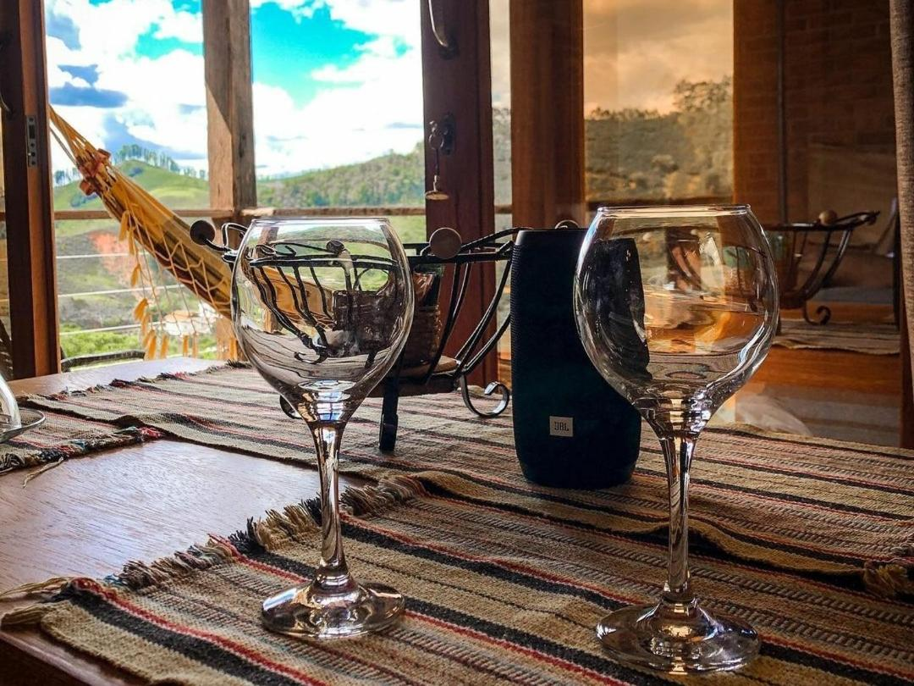
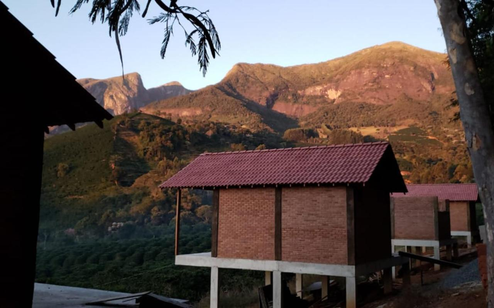

Uma pausa especial 4 fotos02 / POUSADA CAFÉ DA MATA
Chalé Superior
Hidromassagem, cozinha e uma varanda para aproveitar a serra.
Até 4 hóspedes 45 m²
Conhecer acomodação
Seu refúgio na serra
Madeira, tijolinhos e uma varanda voltada para o verde. Seu cantinho para dias tranquilos na serra.
Conheça o seu espaço
Um quarto, uma varanda e a paisagem do Caparaó por perto. O Chalé de 1 quarto reúne o charme da madeira e dos tijolinhos com o conforto de um espaço só seu.
Comece a manhã com o café servido no chalé. Depois, aproveite a varanda para ler, conversar ou simplesmente deixar o tempo passar.
Um olhar mais de perto
Os ambientes, os detalhes e a paisagem.
Toque em uma foto para ampliar.

O charme da madeira
A paisagem logo ali
Uma janela para a serra
Pequenos momentos
A pousada entre cafezaisChalé de 1 quarto · Pousada Café da Mata
Antes de fazer as malas
A gente ajuda a organizar os detalhes para você aproveitar a viagem com tranquilidade.
Veja como chegarToque em “Consultar datas”, informe a entrada, a saída e os hóspedes. A opção Chalé de 1 quarto já estará selecionada. Sua consulta será levada ao WhatsApp da pousada.
O café da manhã é servido na acomodação. Você começa o dia com a tranquilidade de aproveitar o seu próprio espaço.
No formulário, escolha a quantidade de crianças e informe as idades. Use o campo de observações para contar sobre necessidades de acessibilidade ou algum pedido para a sua estadia.
A consulta pelo site inicia a conversa. A equipe confirma a disponibilidade, os valores, a composição dos hóspedes e as condições da reserva com você pelo WhatsApp.